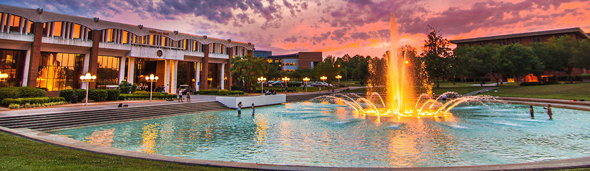
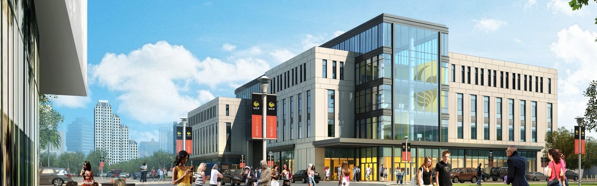

How it all began:
I moved to Orlando around 2 years ago from Miami Beach. I had to transfer from Miami Dade College
to Valencia College. It was never my plan to come to UCF in the first place, however, when my family
decided to move to Central Florida, UCF became the opportunity.

Associates in Art & Science
In Valencia College, I completed an Associate in Arts and an Associate in Science.
My associate in Science was specialized in Paralegal Studies Litigation. I decided to become
Paralegal to tryout the field and decide whether I wanted to continue with my career goal of
becoming a Lawyer.
Career Choices
My journey here at UCF started when I decided to do my major in
digital media and my minor in psychology. Although my goal is become an
Immigration Attorney, I wanted to have a plan B (Digital Media), in case
I changed my mind in the future.I decided to do Digital Media as my plan B
because computers always caught my attention. I always felt like web design
could be more like a hobby instead of an actual career. Therefore, I decided
to do my minor in psychology because I believe it will be useful if I decide
to continue my career as a Lawyer.
Different Campus
My first semester in UCF was the greatest because I was taking
classes in the main campus. Then our program was transferred to a new campus
created in Downtown Orlando, which is the one I currently attend. This has been
my journey at UCF.

